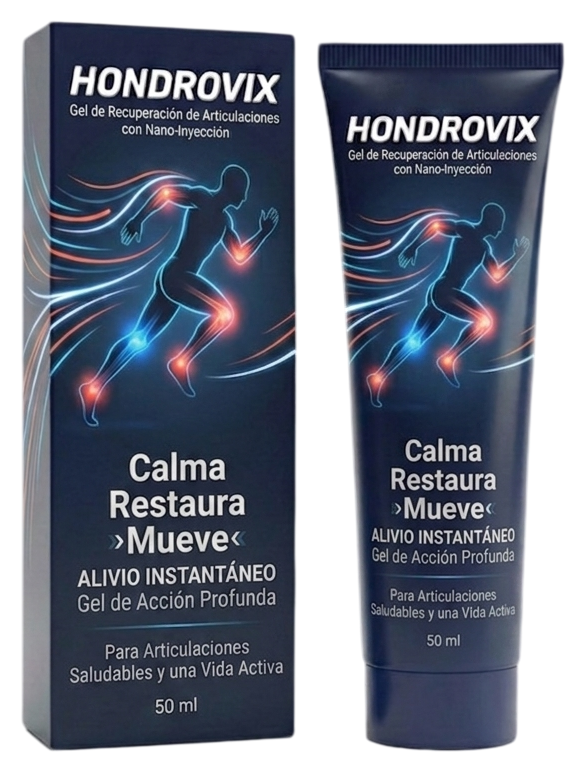
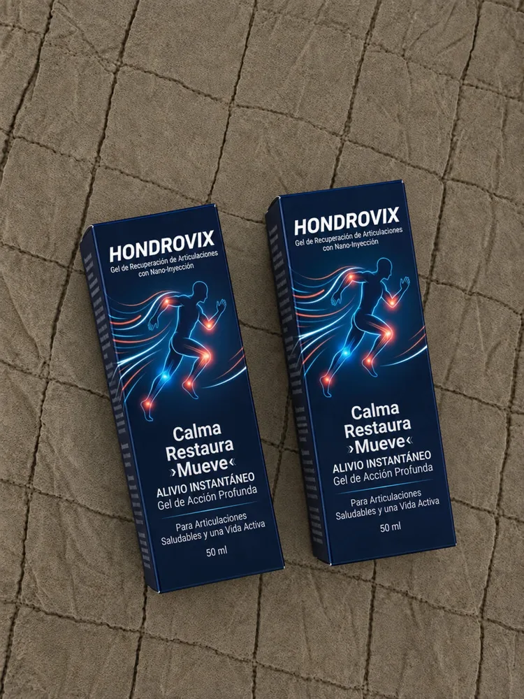

01
Salir sin pensarlo dos veces
Una caminata por el parque, una tarde de compras o un paseo improvisado.
Hay días que quieres aprovechar al máximo: caminar, salir con los tuyos, disfrutar tus actividades favoritas. Haz espacio para una rutina de cuidado que vaya contigo.

Conoce todos los detalles antes de confirmar. Sin suscripciones automáticas.
Tal vez no piensas en tus articulaciones cuando haces planes. Pero están presentes en cada paseo, cada escalón y cada actividad que forma parte de tu vida.
Una caminata por el parque, una tarde de compras o un paseo improvisado.
Subir escaleras, moverte por casa y cumplir con la agenda del día.
Salir con la familia, pasear con amigos o dedicar tiempo a tus pasatiempos.
Hondrovix es un gel de uso externo diseñado para incorporarse a una rutina de cuidado corporal mediante masaje.
Textura en gel para aplicación localizada.
Combinación de cuatro ingredientes de origen botánico.
Presentación práctica de 50 ml.
Lo que contiene tu gel, explicado sin letras pequeñas ni fórmulas misteriosas.
Extracto vegetal conocido por su uso tradicional en productos de masaje.
Ingrediente aromático empleado en fórmulas de sensación fresca.
Ingrediente vegetal que puede generar sensación de calor en la piel.
Ingrediente aromático frecuente en productos de cuidado corporal.
La presencia de un ingrediente no implica por sí sola que el producto trate enfermedades o tenga un efecto clínico específico.
Incorporar un producto a tu rutina no debería complicar tu día.
Consulta las indicaciones del envase.Comprueba cómo y dónde debe utilizarse la fórmula.
Aplica solo sobre piel intacta.Evita ojos, mucosas y zonas irritadas. Lava las manos después.
Escucha a tu piel.Suspende su uso si aparece irritación. No lo combines con calor local sin indicación.

Una compra informada empieza por conocer el producto, su presentación, el precio y las condiciones de entrega.
Precio por una presentación.
Deja tus datos para conocer la disponibilidad, los costos de entrega y confirmar si deseas realizar tu pedido.
Información importante para tomar una decisión con tranquilidad.
Su fórmula destaca Arnica montana, Mentha piperita, Capsicum frutescens y Eucalyptus globulus. Revisa siempre la lista completa de ingredientes en el envase.
El precio de la presentación ofrecida es de $590 MXN. Los costos de envío, si corresponden, se informan antes de confirmar el pedido.
Hondrovix es un gel tópico de 50 ml para uso externo; no se ingiere.
Sigue las instrucciones reales del envase. Evita piel irritada, ojos y mucosas. Los extractos vegetales pueden causar irritación en personas sensibles.
No. Primero se verifican los datos, la disponibilidad y las condiciones de envío y pago. La compra se confirma después.